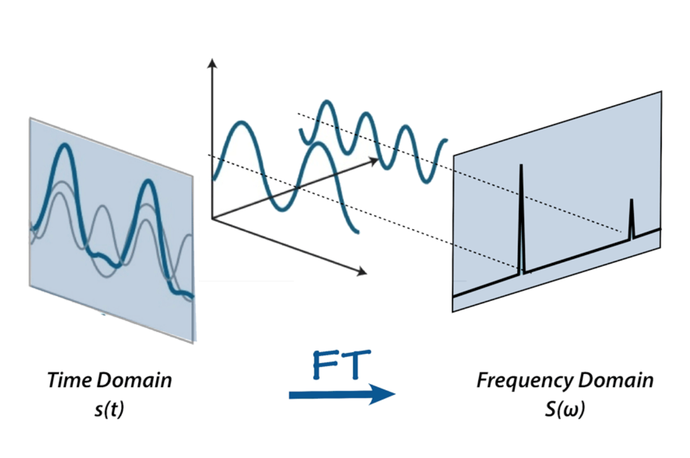
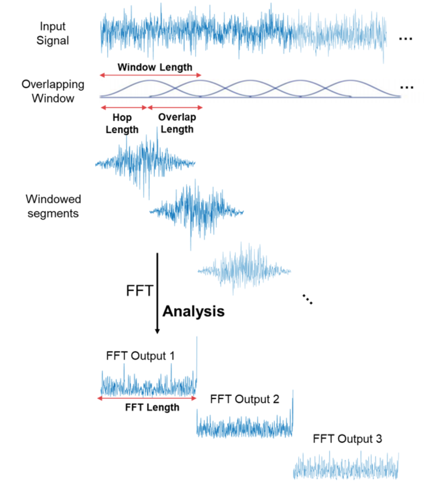

Log Mel Spectrogram
Log Mel Spectrogram¶
The conventional way of presenting audio signals is by ploting the variation in amplitude along the temporal axis (waveform). This variation is reflecting the variation of air pressure quantity.
import librosa
import matplotlib.pyplot as plt
fig, ax = plt.subplots(1, 1, figsize=(10, 5))
y, sr = librosa.load('./p252_002_mic1.flac')
ax.plot(y)
ax.set_title('Signal', fontsize=20)
ax.set_xlabel('Time (samples)', fontsize=20)
ax.set_ylabel('Amplitude', fontsize=20)
plt.tight_layout()
Any audio signal is a composition of several single-frequency waves with varying amplitudes. In order to extract these information, we use Fourier Transform to decompose the temporal signal into sine and cosine waves that represent the building block of any signal. These single-frequency waves could be used to add up to reconstruct the original signal.
 |
|---|
Fig.1 - Signal in Time and Frequency domains (from Aavos International) |
The representation of a signal in the frequency domain is called a Spectrum in which we plot the variation in amplitude across the frequency axis instead of time.
import numpy as np
fig, ax = plt.subplots(1, 1, figsize=(10, 8))
n_fft = 2048
fft_spectrum = np.fft.rfft(y)
freq = np.fft.rfftfreq(y.shape[0], d=1./sr)
fft_spectrum_abs = np.abs(fft_spectrum)
ax.plot(freq, fft_spectrum_abs)
ax.set_title('Spectrum', fontsize=20)
ax.set_xlabel('Frequency Bin', fontsize=20)
ax.set_ylabel('Amplitude', fontsize=20)
plt.tight_layout()
That being said, it is useful to show how the amplitudes of frequencies change across time. Thus, we need to show a 2D representation showing the amplitude variation across freqency and time axes. This presentation called Spectrogram. We show the amplitudes in log scale for better visualizetion.
 |
|---|
Fig.2 - Fourier Transform of Audio Signal (from Math Works) |
import torch
import torchaudio
import torchaudio.transforms as T
n_fft = 2048
win_length = None
hop_length = 1024
spec_fn = T.Spectrogram(
n_fft=n_fft,
win_length=win_length,
hop_length=hop_length,
center=True,
power=2.0,
)
y, sr = torchaudio.load('./p252_002_mic1.flac')
spec = spec_fn(y).squeeze(0)
log_spec = (spec + torch.finfo().eps).log().squeeze(0)
fig, ax = plt.subplots(1, 1, figsize=(10, 8))
im = ax.imshow(log_spec, origin="lower", aspect='auto')
fig.colorbar(im, ax=ax)
ax.set_title('Linear Spectrogram', fontsize=20)
ax.set_xlabel('Frame', fontsize=20)
ax.set_ylabel('Frequency Bin', fontsize=20)
plt.tight_layout()
plt.show()
Additionally, to mimic how humans perceive frequencies, some modifications in the frequency scaling are required. For instance, we don’t perceive frequencies on a linear scale. In fact, in 1937, Stevens, Volkmann, and Newmann introduced the mel scale. A scale that accomodate the distances between frequencies to be similar to how we perveive those distances. Hence, we use the Mel-spectrogram, with ammplitudes in log scale, as an adequate representation of audio signals.
mel_spec_fn = T.MelSpectrogram(
sample_rate=sr,
n_fft=n_fft,
win_length=win_length,
hop_length=hop_length,
n_mels=128,
f_min=5,
f_max=20000,
power=2,
)
mel_spec = mel_spec_fn(y).squeeze(0)
log_mel_spec = (mel_spec + torch.finfo().eps).log().squeeze(0)
fig, ax = plt.subplots(1, 1, figsize=(10, 8))
im = ax.imshow(log_mel_spec, origin="lower", aspect='auto')
fig.colorbar(im, ax=ax)
ax.set_title('Mel Spectrogram', fontsize=20)
ax.set_xlabel('Frame', fontsize=20)
ax.set_ylabel('Frequency Bin', fontsize=20)
plt.tight_layout()
plt.show()
In the upcoming experiments, we used Log-Mel-Spectrograms as an example for handcrafted features to analyze speaker identity. Accrodingly, we extracted a 128-band log-mel magnitude coefficients using a sampling rate of 16 kHz with number of FFT samples of 2048 and hop size of 512. All spectrograms were generated within a frequency range of 5 to 20,000 Hz.